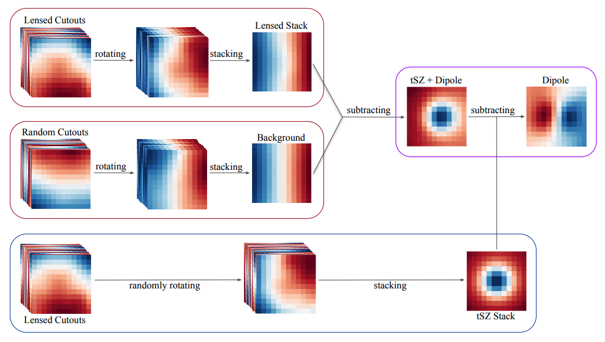

Projects
Flood Detection from Sentinel-1 SAR Imagery
Detecting flooding quickly matters for disaster response, but the moments floods happen are often exactly when optical satellites are least useful as heavy cloud cover during storms blocks the view entirely. Synthetic Aperture Radar solves this: it penetrates cloud cover and works day or night, at the cost of being hard to read directly, since water shows up as a subtle, dark, low-texture region within otherwise noisy backscatter rather than an obvious visual feature.
This project trains a U-Net with a ResNet34 encoder to segment water extent directly from raw Sentinel-1 imagery, trained on the Sen1Floods11 dataset, reaching a mean IoU of 0.79. It's trained on Vertex AI and deployed as a live, containerized API on Google Cloud Run.

CMB Lensing Reconstruction Using Two Years of Temperature Data from the SPT-3G Summer Survey
The first reconstruction of the CMB lensing signal from the SPT-3G Summer survey using two years of temperature data, covering about 2,640 deg² split across three fields (1,210, 570, and 860 deg²). Combining all three gives a lensing amplitude of 1.015 ± 0.053 relative to the Planck 2018 prediction over multipoles 50 < L < 2000. These early results show the potential of the Summer fields for precision cosmology, especially when combined with SPT-3G's Main and Wide fields, which will push the total survey area to roughly 10,000 deg².


A Foreground-Immune CMB-Cluster Lensing Estimator
Galaxy clusters gravitationally lens the CMB, producing a characteristic dipole pattern that can be used to estimate cluster masses, including for high-redshift clusters (z ≳ 1) that future surveys are expected to detect. The catch is that conventional temperature-based estimators are biased by cluster-correlated foregrounds, particularly the thermal and kinematic Sunyaev-Zel'dovich effects, which sit on the same patch of sky and contaminate the signal if left untreated.
This project implements a foreground-immune version of the estimator that stays robust to those contaminants while remaining simple to run, and reaches a signal-to-noise competitive with both other temperature-based and polarization-based approaches for current and future CMB surveys.

Bayesian Redshift Distribution Modeling
Every large-scale structure measurement depends on knowing how far away the galaxies actually are, and photometric surveys only give a rough estimate of that. This project fits Gaussian mixture models to photometric redshift distributions using MCMC sampling, uses the Bayesian information criterion to decide how many components the data actually supports, and corrects iteratively for selection bias.